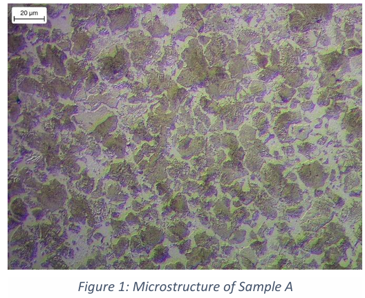
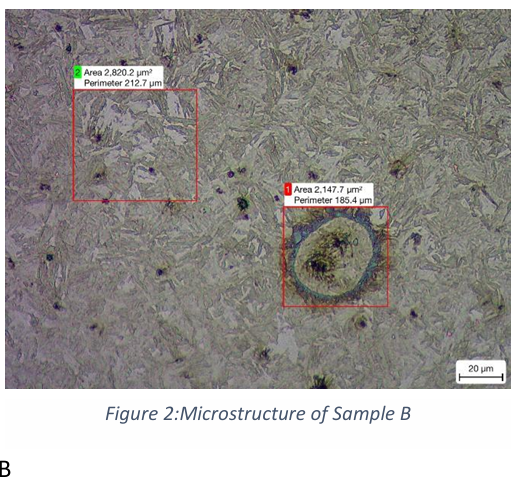

Project Overview
A metallography and mechanical-testing investigation comparing two automotive steel samples to determine which vehicle body application each is suited for. Sample preparation (grinding, polishing, etching) revealed each sample's microstructure, and a simulated tensile test, run in the course's PIP simulation software, quantified its mechanical properties. Together, these identified which sample belongs in a crash zone and which belongs in a high-strength structural part.
Technical Approach
Key techniques
- Progressive mechanical grinding across four grit stages (120, 400, 600, 1200), washing with water then ethanol and drying between each stage to prevent cross-contamination
- Fine polishing with 6-micron and 1-micron cloths, followed by etching in 3% Nital for 3–4 seconds to reveal the grain structure
- Microscope verification of grain-boundary visibility after etching, re-etching where needed, followed by a simulated tensile test in the course's PIP software to obtain yield stress, ultimate tensile strength, and necking strain for each sample
Process steps
- Ground each sample through the four grit stages, washing and drying between each pass
- Polished to a 1-micron finish, etched with 3% Nital, and verified grain-boundary visibility under the microscope
- Captured the microstructure of each sample and ran a simulated tensile test to obtain their mechanical properties
Results & Analysis
Sample A showed a ferrite microstructure with an equiaxed grain structure, while Sample B showed a martensite microstructure with a sharp, lenticular grain structure. This microstructural difference lines up directly with the tensile results:
| Yield Stress (MPa) | Ultimate Tensile Strength (MPa) | Necking Strain | |
|---|---|---|---|
| Sample A | 366 ± 19 | 582 | 0.21 |
| Sample B | 1748 ± 39 | 1779 | 0.05 |


Martensite is strong and brittle, while ferrite is soft and ductile. Sample A's lower yield and ultimate tensile strength means it absorbs energy through early plastic deformation and fails in a ductile manner, which is exactly the behaviour needed in a crash zone, where the part should deform and absorb as much impact energy as possible before failing. Sample B's much higher yield and ultimate tensile strength means it resists plastic deformation until it reaches yield stress, then fails in a brittle manner. That is the behaviour needed in an ultra-high-strength structural part, where the priority is maintaining structural integrity and not breaking under load, to protect the passenger cell during a crash.
Conclusion: Sample A (ferritic microstructure) is suited to a crash zone part; Sample B (martensitic microstructure) is suited to an ultra-high-strength body part.